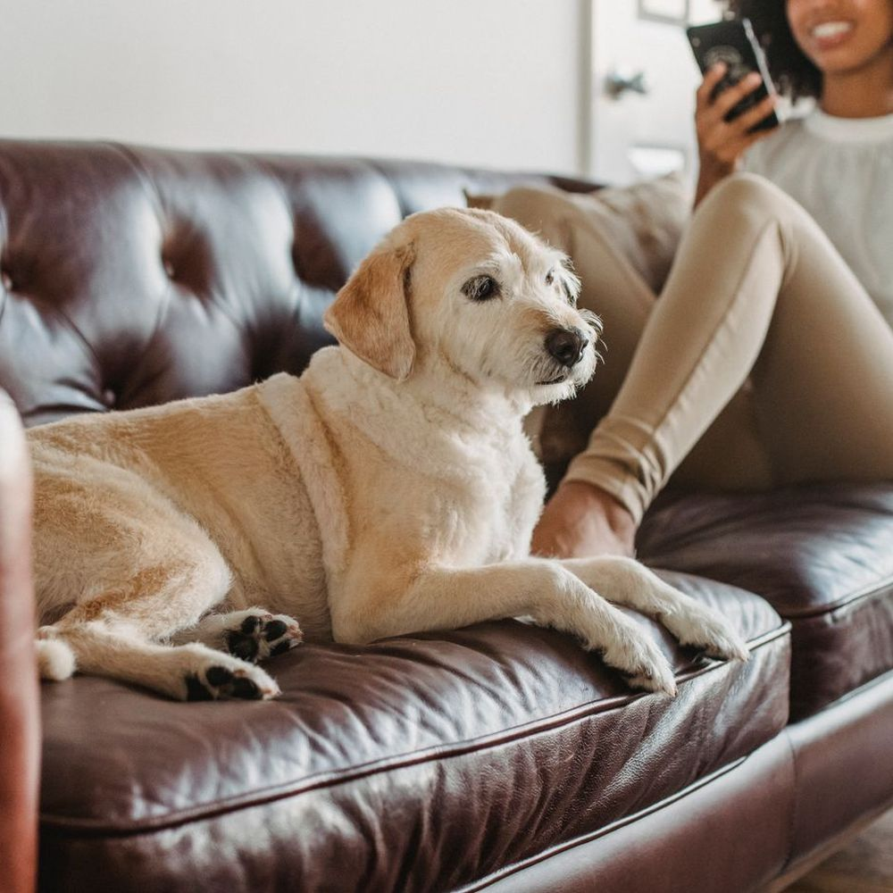

Passos 1 e 2
Antes da visita
-
01
Você entra em contato. Conte pelo WhatsApp o que seu pet precisa.
-
02
Combinamos um dia e horário. Agendamos o atendimento e passo as orientações de preparo, quando houver.